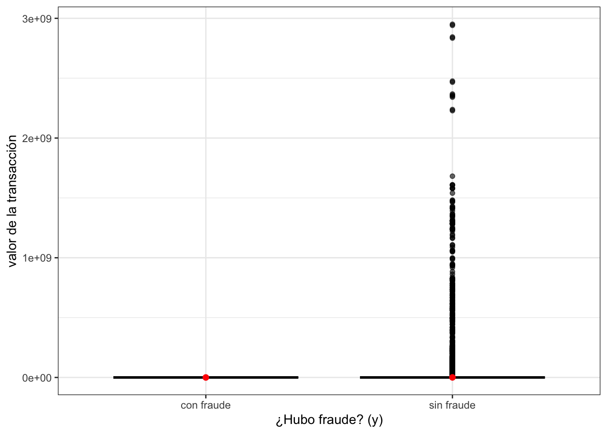
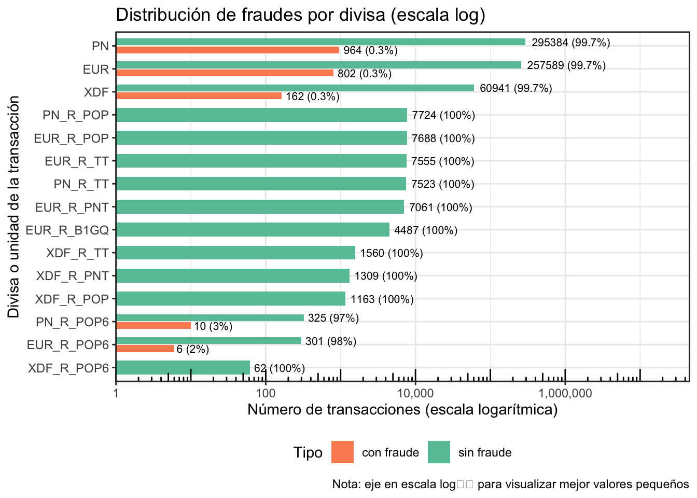
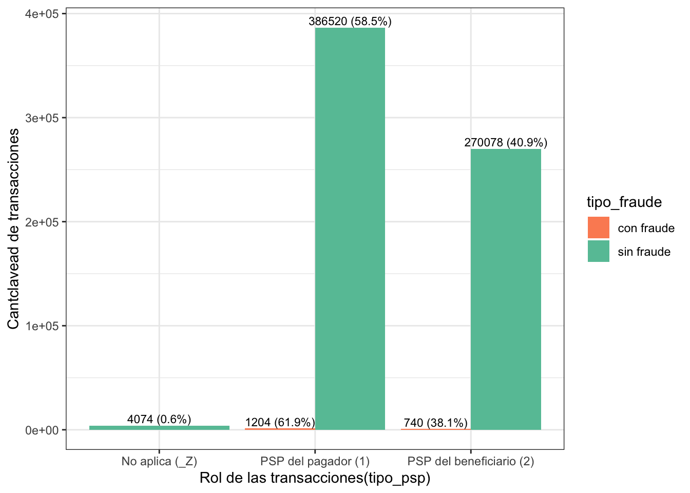
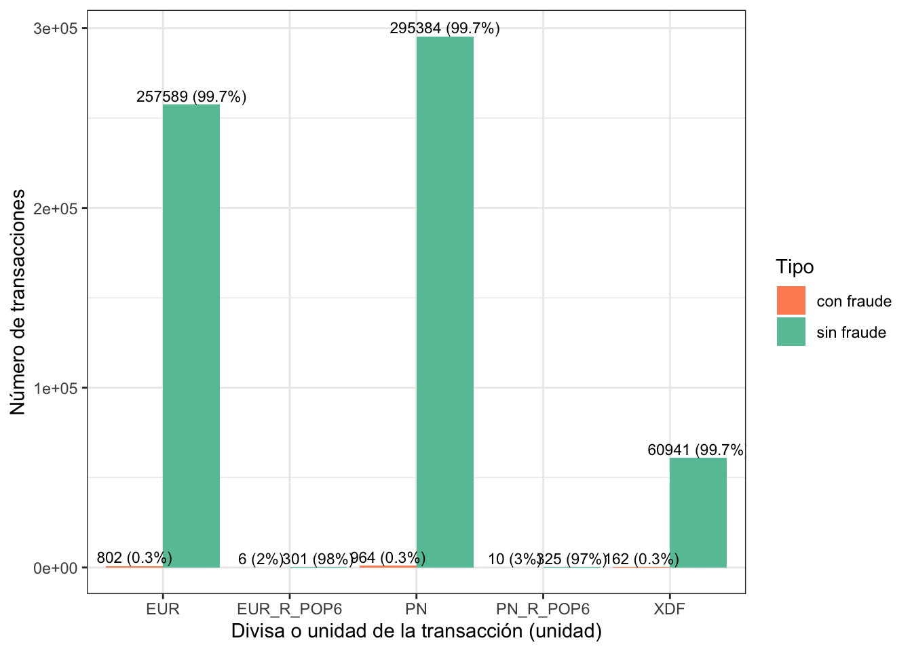

Chapter 3 Análisis Exploratorio Bivariado
3.1 Análisis de la variable de respuesta frente a las variables numéricas
Realizaremos la comparación de la variable “tipo_fraude” correspondiente al tipo de fraude con la única variable númerica del dataset, la cual es “monto” correspondiente al valor de la transacción. En este caso, la variable de respuesta solo tiene dos opciones: “sin fraude” y “con fraude”, por tanto, se tomarán estos dos grupos y se analizará el valor de la transacción mediante el grafico de caja y bigotes bivariado para estas variables y se compararán las medias de estos dos grupos independientes, para ello se verificarán los supuestos de normalidad e igualdad de varianza para elegir la prueba correspondiente para al caso.
3.1.1 Gráfico multiple
datos2 %>%
ggplot(aes(x = tipo_fraude, y = monto)) +
geom_boxplot(fill = "#1E90FF", alpha = 0.6, color = "black") +
stat_summary(fun = mean, geom = "point", shape = 20, size = 3, color = "red") +
labs(
descripcion= "Distribución del valor de la transacción según el tipo de fraude",
x = "¿Hubo fraude? (y)",
y = "valor de la transacción"
) +
theme_bw() +
theme(
plot.descripcion= element_text(hjust = 0.5),
strip.background = element_rect(fill = "gray90", color = NA),
strip.text = element_text(face = "bold")
)
El gráfico muestra la distribución del valor de la transacciones según su respuesta a si hubo o no fraude. En el gráfico para las operaciones no fraudulentas se observa una alta dispersión y la presencia de numerosos valores extremos, alcanzando montos muy elevados, lo que indica gran variabilidad en transacciones legítimas. En contraste, las transacciones fraudulentas aparecen concentradas en valores bajos y con escasa variabilidad. Este patrón sugiere que el fraude se asocia principalmente a importes reducidos, mientras que los valores altos corresponden mayoritariamente a operaciones no fraudulentas.
3.1.2 Comparación de ambas muestras
Gracias a lo anterior, se realizará el análisis de la media de los valores de las transacciones en los grupos donde hubo y no hubo fraude. Para ello se procede realizar un análisis descriptivo básico entre los dos grupos.
tabla_grupos <- datos2 %>%
group_by(tipo_fraude) %>%
summarise(
n = length(monto),
media = mean(monto, na.rm = TRUE),
ds = sd(monto, na.rm = TRUE),
mediana = median(monto, na.rm = TRUE),
minimo = min(monto, na.rm = TRUE),
maximo = max(monto, na.rm = TRUE),
Q1 = quantile(monto, 0.25, na.rm = TRUE),
Q3 = quantile(monto, 0.75, na.rm = TRUE),
IQR = IQR(monto, na.rm = TRUE)
)
tabla_total <- datos2 %>%
summarise(
tipo_fraude = "Total",
n = n(),
media = mean(monto, na.rm = TRUE),
ds = sd(monto, na.rm = TRUE),
mediana = median(monto, na.rm = TRUE),
minimo = min(monto, na.rm = TRUE),
maximo = max(monto, na.rm = TRUE),
Q1 = quantile(monto, 0.25, na.rm = TRUE),
Q3 = quantile(monto, 0.75, na.rm = TRUE),
IQR = IQR(monto, na.rm = TRUE)
)
bind_rows(tabla_grupos, tabla_total) %>%
knitr::kable(
caption = "Estadísticas descriptivas de monto por tipo de fraude",
digits = 2,
align = "c",
col.names = c("Tipo de fraude", "n", "Media", "DS",
"Mediana", "Mínimo", "Máximo",
"Q1", "Q3", "IQR")
) %>%
kableExtra::kable_styling(
bootstrap_options = c("striped", "hover"),
full_width = FALSE,
position = "center"
) %>%
kableExtra::row_spec(0, bold = TRUE) %>%
kableExtra::row_spec(
nrow(bind_rows(tabla_grupos, tabla_total)),
bold = TRUE,
background = "#EFEFEF"
) %>%
kableExtra::scroll_box(
width = "100%",
height = "400px"
)| Tipo de fraude | n | Media | DS | Mediana | Mínimo | Máximo | Q1 | Q3 | IQR |
|---|---|---|---|---|---|---|---|---|---|
| con fraude | 1944 | 102.26 | 734.52 | 0.12 | 0 | 1.726444e+04 | 0 | 8.07 | 8.07 |
| sin fraude | 660672 | 640706.76 | 22185244.60 | 0.79 | -100 | 2.950583e+09 | 0 | 151.37 | 151.37 |
| Total | 662616 | 638575.28 | 22148336.17 | 0.78 | -100 | 2.950583e+09 | 0 | 149.06 | 149.06 |
La distribución del valor de las transacciones según hubo fraude o no muestra diferencias relevantes en las medidas de tendencia central. Se observa que la media es considerablemente mayor en el grupo sin fraude que en el grupo con fraude; sin embargo, las medianas en ambos casos son cercanas a cero, lo que indica una distribución fuertemente asimétrica hacia la derecha. Esta asimetría se confirma por las desviaciones estándar extremadamente elevadas y por la presencia de valores máximos muy grandes, lo que sugiere la existencia de valores atípicos significativos. En este contexto, la mediana y el rango intercuartílico resultan medidas más representativas que la media, y podría considerarse una transformación logarítmica para estabilizar la varianza y mejorar el análisis; sin embargo, existen valores negativos y no es muy viable.
3.1.3 Prueba de normalidad
En esta ocasión se usará la prueba de Anderson-Darling porque las muestras son grandes y con cola hacia la derecha muy pronunciada.
##
## Anderson-Darling normality test
##
## data: datos2$monto[datos2$tipo_fraude == "con fraude"]
## A = 555.78, p-value < 2.2e-16##
## Anderson-Darling normality test
##
## data: datos2$monto[datos2$tipo_fraude == "sin fraude"]
## A = 195608, p-value < 2.2e-16Con un nivel de confianza del 95% y dado que en ambas pruebas el p-valor es menor a 0.05, se puede concluir que ambas poblaciones no siguen una distribución normal.
3.1.4 Test de Wilcoxon
Se realizará el siguiente test de Wilcoxon porque es no paramétrico y responde a grupos que no siguen una distribución normal.
grupo_F <- datos2$monto[datos2$tipo_fraude == "con fraude"]
grupo_Z <- datos2$monto[datos2$tipo_fraude == "sin fraude"]
wilcox.test(grupo_F, grupo_Z)##
## Wilcoxon rank sum test with continuity correction
##
## data: grupo_F and grupo_Z
## W = 396270632, p-value = 6.228e-16
## alternative hypothesis: true location shift is not equal to 0La prueba de Wilcoxon arrojó un p-valor extremadamente pequeño menor a 0.05, lo que indica que se rechaza la hipótesis nula de igualdad en la distribución (o mediana) del monto de la transacción(monto) entre los grupos con fraude y sin fraude. En consecuencia, existe diferencia estadísticamente significativa de que los montos de las transacciones. Entonces, el valor de la transacción no se comporta de la misma manera en operaciones fraudulentas y no fraudulentas, lo que constituye un indicio de dependencia entre ambas variables.
3.2 Análisis de la variable de respuesta frente a las variables categóricas independientes.
3.2.1 Variable clave
Para este analisis la variable clave (clave compuesta de la transacción) se excluye frente al tipo de fraude (tipo_fraude) porque presenta baja frecuencia por categoría, haciendo que sea poco interpretable. Además, clave corresponde a un código estructural compuesto que integra múltiples atributos técnicos, por lo que no representa una característica explicativa independiente con significado analítico propio.
3.2.2 Variable frecuencia
datos2 %>%
group_by(tipo_fraude) %>%
count(frecuencia, name = "n") %>%
mutate(
categoria = frecuencia,
variable = "frecuencia",
porcentaje = (n / sum(n)) * 100,
) %>%
select(tipo_fraude, variable, categoria, n, porcentaje) -> tabla_frecuencia
kable(tabla_frecuencia,
caption = "Distribución de frecuencia según tipo_fraude",
align = "c") %>%
kable_styling(
bootstrap_options = c("striped", "hover"),
full_width = FALSE,
position = "center"
) %>%
row_spec(0, bold = TRUE)| tipo_fraude | variable | categoria | n | porcentaje |
|---|---|---|---|---|
| con fraude | frecuencia | H | 1944 | 100.00000 |
| sin fraude | frecuencia | A | 275179 | 41.65138 |
| sin fraude | frecuencia | H | 234940 | 35.56076 |
| sin fraude | frecuencia | Q | 150553 | 22.78786 |
La distribución de la frecuencia con que se hacen las transacciones según la respuesta si hubo fraude o no, muestra diferencias relevantes en los patrones de respuesta. En los casos donde hubo fraude el 100% corresponden a transacciones con frecuencia H(mitad de año). En contraste, en el grupo donde no hubo fraude, la mayoría de transacciones (41.65%) fueron A(anuales), pero la proporción donde la transacción fue H(mitad de año) y Q(trimestral) es menor. Esta diferencia sugiere que las transacciones realizadas con frecuencia a mitad de año son más propensas a que sean fraude y en otro caso es casi nula esta posibilidad.
Gráfico de barras multiple
df_plot <- datos2 %>%
group_by(tipo_fraude) %>%
count(frecuencia, name = "n") %>%
mutate(
categoria = frecuencia,
variable = "frecuencia",
porcentaje = (n / sum(n)) * 100
) %>%
select(tipo_fraude, categoria, n, porcentaje)
df_plot %>%
ggplot(aes(x = categoria, y = n, fill = tipo_fraude)) +
geom_bar(stat = "identity",
position = position_dodge(width = 0.9)) +
geom_text(
aes(label = paste0(n, " (", round(porcentaje, 1), "%)")),
position = position_dodge(width = 0.9),
vjust = -0.3,
size = 3
) +
labs(
descripcion = "Frecuencia con las que se hacen las transacciones (frecuencia)",
x = "Frecuencia con las que se hacen las transacciones (frecuencia)",
y = "Cantidad de transacciones"
) +
theme_bw() +
scale_fill_brewer(palette = "Set2", direction = -1) +
scale_x_discrete(labels = c(
"A" = "Anual(A)",
"H" = "Mitad de año(H)",
"Q" = "Trimestral(Q)"
))## Ignoring unknown labels:
## • descripcion : "Frecuencia con las que se
## hacen las transacciones (frecuencia)"
El gráfico muestra que la gran mayoría de las transacciones corresponden a la clase sin fraude, distribuyéndose principalmente en las categorías A (41.7%) y H (35.6%), mientras que Q representa una proporción menor. En contraste, los casos de fraude son extremadamente pocos y se concentran completamente en una sola categoría de frecuencia (H), lo que evidencia el fuerte desbalance de la variable respuesta.
Prueba de independencia
##
## Pearson's Chi-squared test
##
## data: tabla_frecuencia
## X-squared = 3504.1, df = 2, p-value < 2.2e-16Se rechaza H₀: hay evidencia suficiente para afirmar que la variable frecuencia y tipo_fraude no son independientes; es decir, existe asociación estadísticamente significativa entre la frecuencia con la que se realiza determinado pago y el tipo de fraude.
3.2.3 Variable pais_origen
datos2 %>%
group_by(tipo_fraude) %>%
count(pais_origen, name = "n") %>%
mutate(categoria = pais_origen,
variable = "pais_origen",
porcentaje = (n / sum(n)) * 100,
) %>%
select(tipo_fraude, variable, categoria, n, porcentaje) %>%
arrange(desc(n))->tabla_COUNTRY
kable(tabla_COUNTRY,
caption = "Distribución de pais_origen según tipo_fraude",
align = "c") %>%
kable_styling(
bootstrap_options = c("striped", "hover", "condensed", "responsive"),
full_width = FALSE,
position = "center",
font_size = 14
) %>%
scroll_box(height = "400px") %>%
row_spec(0, bold = TRUE)| tipo_fraude | variable | categoria | n | porcentaje |
|---|---|---|---|---|
| sin fraude | pais_origen | RO | 28746 | 4.3510244 |
| sin fraude | pais_origen | HU | 28724 | 4.3476945 |
| sin fraude | pais_origen | PL | 28203 | 4.2688354 |
| sin fraude | pais_origen | CZ | 28063 | 4.2476448 |
| sin fraude | pais_origen | NL | 27204 | 4.1176257 |
| sin fraude | pais_origen | PT | 25600 | 3.8748426 |
| sin fraude | pais_origen | LT | 25520 | 3.8627337 |
| sin fraude | pais_origen | DE | 25149 | 3.8065788 |
| sin fraude | pais_origen | FI | 25092 | 3.7979512 |
| sin fraude | pais_origen | LU | 25086 | 3.7970430 |
| sin fraude | pais_origen | BE | 25075 | 3.7953780 |
| sin fraude | pais_origen | GR | 25074 | 3.7952267 |
| sin fraude | pais_origen | ES | 25065 | 3.7938644 |
| sin fraude | pais_origen | LV | 25062 | 3.7934103 |
| sin fraude | pais_origen | IT | 25060 | 3.7931076 |
| sin fraude | pais_origen | AT | 25055 | 3.7923508 |
| sin fraude | pais_origen | FR | 25049 | 3.7914427 |
| sin fraude | pais_origen | IE | 25045 | 3.7908372 |
| sin fraude | pais_origen | CY | 25039 | 3.7899290 |
| sin fraude | pais_origen | EE | 25038 | 3.7897777 |
| sin fraude | pais_origen | SI | 25034 | 3.7891722 |
| sin fraude | pais_origen | SK | 25034 | 3.7891722 |
| sin fraude | pais_origen | MT | 25018 | 3.7867505 |
| sin fraude | pais_origen | BG | 24602 | 3.7237843 |
| sin fraude | pais_origen | HR | 23930 | 3.6220697 |
| sin fraude | pais_origen | DK | 10768 | 1.6298557 |
| sin fraude | pais_origen | U2 | 3238 | 0.4901070 |
| sin fraude | pais_origen | B0 | 3108 | 0.4704301 |
| sin fraude | pais_origen | SE | 1991 | 0.3013598 |
| con fraude | pais_origen | U2 | 114 | 5.8641975 |
| con fraude | pais_origen | B0 | 112 | 5.7613169 |
| con fraude | pais_origen | ES | 74 | 3.8065844 |
| con fraude | pais_origen | SK | 74 | 3.8065844 |
| con fraude | pais_origen | GR | 72 | 3.7037037 |
| con fraude | pais_origen | MT | 72 | 3.7037037 |
| con fraude | pais_origen | PT | 72 | 3.7037037 |
| con fraude | pais_origen | AT | 70 | 3.6008230 |
| con fraude | pais_origen | BE | 70 | 3.6008230 |
| con fraude | pais_origen | CY | 70 | 3.6008230 |
| con fraude | pais_origen | CZ | 70 | 3.6008230 |
| con fraude | pais_origen | DE | 70 | 3.6008230 |
| con fraude | pais_origen | EE | 70 | 3.6008230 |
| con fraude | pais_origen | FI | 70 | 3.6008230 |
| con fraude | pais_origen | FR | 70 | 3.6008230 |
| con fraude | pais_origen | HU | 70 | 3.6008230 |
| con fraude | pais_origen | IE | 70 | 3.6008230 |
| con fraude | pais_origen | IT | 70 | 3.6008230 |
| con fraude | pais_origen | LT | 70 | 3.6008230 |
| con fraude | pais_origen | LU | 70 | 3.6008230 |
| con fraude | pais_origen | LV | 70 | 3.6008230 |
| con fraude | pais_origen | NL | 70 | 3.6008230 |
| con fraude | pais_origen | RO | 70 | 3.6008230 |
| con fraude | pais_origen | SI | 70 | 3.6008230 |
| con fraude | pais_origen | PL | 64 | 3.2921811 |
| con fraude | pais_origen | BG | 50 | 2.5720165 |
| con fraude | pais_origen | HR | 50 | 2.5720165 |
La distribución del país de origen según la respuesta de si hubo fraude o no muestra diferencias relevantes en los patrones observados. En los casos donde se registró mayor proporción de fraude, el 5.86% corresponde a transacciones al area europea (U2), el 5.76% a estados miembros e instituciones de la Unión Europea (B0) y el 3.8% a España (ES). En contraste, en el grupo sin fraude, la mayor proporción (4.35%) corresponde al país de Romania(RO), mientras que el 4.34% a Hungria (HU) y el 4.26% a Polonia (PL) presentan valores ligeramente inferiores.
Esta diferencia sugiere las zonas donde es más propenso a que las transacciones realizadas sean fraude son: en el pais de España y en las zonas del area Europea y Union Europea, mientras que las transacciones de países como RO, HU y PL tienden a concentrarse en operaciones sin fraude, lo que podría ser relevante para estrategias de segmentación o análisis de comportamiento.
Gráfico de barras multiple
top5_paises <- datos2 %>%
filter(tipo_fraude == "con fraude") %>%
count(pais_origen, name = "n") %>%
arrange(desc(n)) %>%
slice_head(n = 5) %>%
pull(pais_origen)
df_plot <- datos2 %>%
filter(pais_origen %in% top5_paises) %>%
count(pais_origen, tipo_fraude, name = "n") %>%
group_by(pais_origen) %>%
mutate(porcentaje = n / sum(n) * 100) %>%
ungroup()
ggplot(df_plot, aes(x = pais_origen, y = n, fill = tipo_fraude)) +
geom_bar(stat = "identity", position = position_dodge(width = 0.9)) +
geom_text(aes(label = paste0(n, " (", round(porcentaje, 1), "%)")),
position = position_dodge(width = 0.9),
vjust = -0.3,
size = 3) +
labs(descripcion= "Top 5 países con mayor número de fraudes",
x = "País o Área (pais_origen)",
y = "Número de transacciones",
fill = "Tipo") +
theme_bw() +
scale_fill_brewer(palette = "Set2", direction = -1)+
scale_x_discrete(labels = c(
"B0" = "Unión Europea (B0)",
"ES" = "España (ES)",
"GR" = "Grecia (Q)",
"SK" = "Eslovaquia (SK)",
"U2" = "Area europea (U2)"
))## Ignoring unknown labels:
## • descripcion : "Top 5 países con mayor número
## de fraudes"
El gráfico muestra que, aunque estos cinco países concentran el mayor número absoluto de fraudes, la proporción de transacciones fraudulentas dentro de cada país sigue siendo muy baja en comparación con las no fraudulentas. En todos los casos, más del 96% de las transacciones corresponden a la categoría sin fraude, mientras que los fraudes representan entre aproximadamente 0.3% y 3.5% del total por país. Por tanto, esto sigue demostrando el fuerte desvalance de la variable de respuesta.
Prueba de independencia
##
## Pearson's Chi-squared test
##
## data: tabla_frecuencia
## X-squared = 2288.9, df = 28, p-value < 2.2e-16Se rechaza HO: no hay evidencia suficiente para afirmar que la variable pais_origen y tipo_fraude son independientes, es decir, existe asociación estadísticamente significativa entre el país de origen y el tipo de fraude.
3.2.4 Variable pais_destino
datos2 %>%
group_by(tipo_fraude) %>%
count(pais_destino, name = "n") %>%
mutate(categoria = pais_destino,
variable = "pais_destino",
porcentaje = (n / sum(n)) * 100,
) %>%
select(tipo_fraude, variable, categoria, n, porcentaje) %>%
arrange(desc(n))->tabla_ORGANIZATION
kable(tabla_ORGANIZATION,
caption = "Distribución de pais_destino según tipo_fraude",
align = "c") %>%
kable_styling(
bootstrap_options = c("striped", "hover", "condensed", "responsive"),
full_width = FALSE,
position = "center",
font_size = 14
) %>%
scroll_box(height = "400px") %>%
row_spec(0, bold = TRUE)| tipo_fraude | variable | categoria | n | porcentaje |
|---|---|---|---|---|
| sin fraude | pais_destino | W0 | 86789 | 13.1364732 |
| sin fraude | pais_destino | W1 | 21755 | 3.2928594 |
| sin fraude | pais_destino | W2 | 21507 | 3.2553219 |
| sin fraude | pais_destino | G1 | 17392 | 2.6324712 |
| sin fraude | pais_destino | SE | 16057 | 2.4304042 |
| sin fraude | pais_destino | DK | 15769 | 2.3868122 |
| sin fraude | pais_destino | BG | 15488 | 2.3442798 |
| sin fraude | pais_destino | GR | 15440 | 2.3370144 |
| sin fraude | pais_destino | AT | 15437 | 2.3365604 |
| sin fraude | pais_destino | BE | 15437 | 2.3365604 |
| sin fraude | pais_destino | SI | 15437 | 2.3365604 |
| sin fraude | pais_destino | SK | 15437 | 2.3365604 |
| sin fraude | pais_destino | CY | 15436 | 2.3364090 |
| sin fraude | pais_destino | ES | 15436 | 2.3364090 |
| sin fraude | pais_destino | FI | 15436 | 2.3364090 |
| sin fraude | pais_destino | FR | 15436 | 2.3364090 |
| sin fraude | pais_destino | IT | 15436 | 2.3364090 |
| sin fraude | pais_destino | DE | 15435 | 2.3362576 |
| sin fraude | pais_destino | IE | 15435 | 2.3362576 |
| sin fraude | pais_destino | EE | 15434 | 2.3361063 |
| sin fraude | pais_destino | LU | 15434 | 2.3361063 |
| sin fraude | pais_destino | MT | 15433 | 2.3359549 |
| sin fraude | pais_destino | LV | 15432 | 2.3358035 |
| sin fraude | pais_destino | HR | 15429 | 2.3353495 |
| sin fraude | pais_destino | LT | 15417 | 2.3335331 |
| sin fraude | pais_destino | PT | 15417 | 2.3335331 |
| sin fraude | pais_destino | CZ | 15413 | 2.3329277 |
| sin fraude | pais_destino | PL | 15401 | 2.3311114 |
| sin fraude | pais_destino | HU | 15386 | 2.3288409 |
| sin fraude | pais_destino | RO | 15385 | 2.3286896 |
| sin fraude | pais_destino | NL | 15369 | 2.3262678 |
| sin fraude | pais_destino | G3 | 13173 | 1.9938790 |
| sin fraude | pais_destino | NO | 11735 | 1.7762218 |
| sin fraude | pais_destino | IS | 11732 | 1.7757677 |
| sin fraude | pais_destino | LI | 11727 | 1.7750109 |
| sin fraude | pais_destino | AR | 2960 | 0.4480287 |
| sin fraude | pais_destino | AU | 2960 | 0.4480287 |
| sin fraude | pais_destino | BR | 2960 | 0.4480287 |
| sin fraude | pais_destino | CA | 2960 | 0.4480287 |
| sin fraude | pais_destino | CN | 2960 | 0.4480287 |
| sin fraude | pais_destino | GB | 2960 | 0.4480287 |
| sin fraude | pais_destino | ID | 2960 | 0.4480287 |
| sin fraude | pais_destino | IN | 2960 | 0.4480287 |
| sin fraude | pais_destino | JP | 2960 | 0.4480287 |
| sin fraude | pais_destino | KR | 2960 | 0.4480287 |
| sin fraude | pais_destino | MX | 2960 | 0.4480287 |
| sin fraude | pais_destino | RU | 2960 | 0.4480287 |
| sin fraude | pais_destino | SA | 2960 | 0.4480287 |
| sin fraude | pais_destino | TR | 2960 | 0.4480287 |
| sin fraude | pais_destino | US | 2960 | 0.4480287 |
| sin fraude | pais_destino | ZA | 2960 | 0.4480287 |
| con fraude | pais_destino | W0 | 1944 | 100.0000000 |
La distribución de pais_destino según tipo_fraude muestra que las transacciones no fraudulentas se encuentran ampliamente distribuidas entre diversas áreas geográficas, destacándose entidades areas de referencia del mundo (W0) como la categoría con mayor participación (13.13%), seguida por el resto del mundo (W1) y hogares del mundo (W2), mientras que el resto de áreas presentan proporciones relativamente homogéneas alrededor del 2–3%.
En contraste, los casos de fraude se concentran totalmente en la categoría W0, representando el 100% de los registros fraudulentos observados. Esta estructura evidencia una fuerte concentración geográfica del fraude frente a una distribución más diversificada de las transacciones legítimas, lo que sugiere que el riesgo no es uniforme entre áreas y que esta variable podría aportar capacidad explicativa en un modelo de clasificación.
Gráfico de cajas multiple
top5_paises <- datos2 %>%
filter(tipo_fraude == "con fraude") %>%
count(pais_destino, name = "n") %>%
arrange(desc(n)) %>%
slice_head(n = 5) %>%
pull(pais_destino)
df_plot <- datos2 %>%
filter(pais_destino %in% top5_paises) %>%
count(pais_destino, tipo_fraude, name = "n") %>%
group_by(pais_destino) %>%
mutate(porcentaje = n / sum(n) * 100) %>%
ungroup()
ggplot(df_plot, aes(x = pais_destino, y = n, fill = tipo_fraude)) +
geom_bar(stat = "identity", position = position_dodge(width = 0.9)) +
geom_text(aes(label = paste0(n, " (", round(porcentaje, 1), "%)")),
position = position_dodge(width = 0.9),
vjust = -0.3,
size = 3) +
labs(descripcion= "Top 5 países con mayor número de fraudes",
x = "País (pais_destino)",
y = "Número de transacciones",
fill = "Tipo") +
theme_bw() +
scale_fill_brewer(palette = "Set2",direction = -1)+
scale_x_discrete(labels = c(
"W0" = "Mundo, todas las entidades, incluido el área de referencia (W0)"
))## Ignoring unknown labels:
## • descripcion : "Top 5 países con mayor número
## de fraudes"
El gráfico evidencia que el área W0 (Mundo, todas las entidades, incluido el área de referencia, incluido IO) concentra la totalidad de los fraudes observados (1,944 casos), aunque estos representan solo el 2.2% del total de transacciones en esa región, frente al 97.8% correspondiente a operaciones no fraudulentas. Esto indica que, si bien el fraude está focalizado geográficamente en W0, su ocurrencia sigue siendo baja en términos proporcionales, confirmando el fuerte desbalance de la variable.
Prueba de independencia
##
## Pearson's Chi-squared test
##
## data: tabla_frecuencia
## X-squared = 12610, df = 50, p-value < 2.2e-16Se rechaza H0: no hay evidencia suficiente para afirmar que la variable pais_destino y tipo_fraude son independientes, es decir, existe asociación estadísticamente significativa entre la institución origen de ka transacción y el tipo de fraude.
3.2.5 Variable tipo_trx
datos2 %>%
group_by(tipo_fraude) %>%
count(tipo_trx, name = "n") %>%
mutate(categoria = tipo_trx,
variable = "tipo_trx",
porcentaje = (n / sum(n)) * 100,
) %>%
select(tipo_fraude, variable, categoria, n, porcentaje) %>%
arrange(desc(n))->tabla_tipo_trx
kable(tabla_tipo_trx,
caption = "Distribución de tipo_trx según tipo_fraude",
align = "c") %>%
kable_styling(
bootstrap_options = c("striped", "hover", "condensed", "responsive"),
full_width = FALSE,
position = "center",
font_size = 14
) %>%
scroll_box(height = "400px") %>%
row_spec(0, bold = TRUE)| tipo_fraude | variable | categoria | n | porcentaje |
|---|---|---|---|---|
| sin fraude | tipo_trx | DD | 96303 | 14.5765221 |
| sin fraude | tipo_trx | CT0 | 96293 | 14.5750085 |
| sin fraude | tipo_trx | EMP0 | 92400 | 13.9857600 |
| sin fraude | tipo_trx | CHQ | 92171 | 13.9510983 |
| sin fraude | tipo_trx | CP0 | 59031 | 8.9349935 |
| sin fraude | tipo_trx | SER | 56995 | 8.6268224 |
| sin fraude | tipo_trx | MREM | 52242 | 7.9074034 |
| sin fraude | tipo_trx | TOTL | 48119 | 7.2833418 |
| sin fraude | tipo_trx | TOTL1 | 44336 | 6.7107430 |
| sin fraude | tipo_trx | CW1 | 18708 | 2.8316623 |
| sin fraude | tipo_trx | ND1 | 1624 | 0.2458103 |
| sin fraude | tipo_trx | ND2 | 1624 | 0.2458103 |
| con fraude | tipo_trx | CP0 | 734 | 37.7572016 |
| sin fraude | tipo_trx | ND0 | 415 | 0.0628148 |
| sin fraude | tipo_trx | ND3 | 411 | 0.0622094 |
| con fraude | tipo_trx | DD | 372 | 19.1358025 |
| con fraude | tipo_trx | EMP0 | 372 | 19.1358025 |
| con fraude | tipo_trx | CT0 | 370 | 19.0329218 |
| con fraude | tipo_trx | TOTL | 32 | 1.6460905 |
| con fraude | tipo_trx | CW1 | 30 | 1.5432099 |
| con fraude | tipo_trx | MREM | 30 | 1.5432099 |
| con fraude | tipo_trx | CHQ | 2 | 0.1028807 |
| con fraude | tipo_trx | SER | 2 | 0.1028807 |
La distribución del tipo de transacción según la respuesta de si hubo fraude o no muestra diferencias relevantes en los patrones observados. En los tres casos donde hubo mayor fraude, el 37.75% corresponde a transacciones de pagos con tarjeta(CPO), el 19.13% al tipo de débitos directos (DD) y el 19.13% a pagos con dinero electrónico (EMPO), que fueron las de mayor porcentaje frente a los otros tipos.
En contraste, en el grupo donde no hubo fraude, la mayoría (14.57%) fueron transacciones del tipo DD (débitos directos). Asimismo, la proporción de transacciones de tipo transferencias de crédito (CTO) fue del 14.57% y a pagos con dinero electrónico(EMPO) fue del 13.98%, que es ligeramente menor, pero se mantiene en un rango similar de porcentajes.
Esta diferencia sugiere que las transacciones de tipo CPO, DD y EMPO son más propensas a presentar fraude. Sin embargo, dos de estas categorías (DD y EMPO) también estuvieron entre las tres con mayor proporción de transacciones sin fraude. La única que se diferencia claramente es el tipo de transacción de pagos con tarjeta (CPO), que resulta ser la más propensa a presentar fraude según el análisis, en comparación con otras que también registraron fraude.
Gráfico de barras múltiple
top5_paises <- datos2 %>%
filter(tipo_fraude == "con fraude") %>%
count(tipo_trx, name = "n") %>%
arrange(desc(n)) %>%
slice_head(n = 5) %>%
pull(tipo_trx)
df_plot <- datos2 %>%
filter(tipo_trx %in% top5_paises) %>%
count(tipo_trx, tipo_fraude, name = "n") %>%
group_by(tipo_trx) %>%
mutate(porcentaje = n / sum(n) * 100) %>%
ungroup()
ggplot(df_plot, aes(x = tipo_trx, y = n, fill = tipo_fraude)) +
geom_bar(stat = "identity", position = position_dodge(width = 0.9)) +
geom_text(aes(label = paste0(n, " (", round(porcentaje, 1), "%)")),
position = position_dodge(width = 0.9),
vjust = -0.3,
size = 3) +
labs(DESCRIPTION= "Top 5 países con mayor número de fraudes",
x = "Tipo de transacción (tipo_trx)",
y = "Número de transacciones",
fill = "Tipo") +
theme_bw() +
scale_fill_brewer(palette = "Set2", direction = -1)+
scale_x_discrete(labels = c(
"CP0" = "pagos con tarjeta (CP0)",
"CT0" = "Transferencias de crédito (CT0)",
"DD" = "Débitos directos (DD)",
"EMP0" = "Pagos con dinero electrónico (EMP0)",
"TOTL" = "Transacciones de pagos totales (TOTL)"
))+
coord_flip(clip = "off")## Ignoring unknown labels:
## • DESCRIPTION : "Top 5 países con mayor número
## de fraudes"
El gráfico se muestran los tipos de transferencia con pagos con tarjeta (CPO), Transferencias de crédito (CTO), débitos directos (DD), Pagos con dinero electrónico (EMPO) y Transacciones de pago totales (TOTL); aunque estos 5 tipos de transferencia concentran el mayor número absoluto de fraudes, la proporción de transacciones fraudulentas dentro de cada tipo sigue siendo muy baja en comparación con las no fraudulentas. En todos los casos, más del 98% de las transacciones corresponden a la categoría sin fraude, mientras que los fraudes representan entre aproximadamente 0.1% y 1.2% del total por cada tipo de transacción. Por tanto, esto sigue demostrando el fuerte desvalance de la variable de respuesta y refleja que son casos excasos los casos de fraude frente a donde no hay.
Prueba de independencia
##
## Pearson's Chi-squared test
##
## data: tabla_frecuencia
## X-squared = 2645, df = 13, p-value < 2.2e-16Se rechaza H0: no hay evidencia suficiente para afirmar que la variable tipo_trx y tipo_fraude son independientes, es decir, existe asociación estadísticamente significativa entre la clasificación de la transacción y el tipo de fraude.
3.2.6 Variable tipo_psp
datos2 %>%
group_by(tipo_fraude) %>%
count(tipo_psp, name = "n") %>%
mutate(categoria = tipo_psp,
variable = "tipo_psp",
porcentaje = (n / sum(n)) * 100,
) %>%
select(tipo_fraude, variable, categoria, n, porcentaje) %>%
arrange(desc(n))->tabla_tipo_psp
kable(tabla_tipo_psp,
caption = "Distribución de tipo_psp según tipo_fraude",
align = "c") %>%
kable_styling(
bootstrap_options = c("striped", "hover", "condensed", "responsive"),
full_width = FALSE,
position = "center",
font_size = 14
) %>%
row_spec(0, bold = TRUE)| tipo_fraude | variable | categoria | n | porcentaje |
|---|---|---|---|---|
| sin fraude | tipo_psp | 1 | 386520 | 58.5040686 |
| sin fraude | tipo_psp | 2 | 270078 | 40.8792865 |
| sin fraude | tipo_psp | _Z | 4074 | 0.6166449 |
| con fraude | tipo_psp | 1 | 1204 | 61.9341564 |
| con fraude | tipo_psp | 2 | 740 | 38.0658436 |
La distribución de tipo_psp según la respuesta si hubo fraude o no, muestra diferencias relevantes en los patrones de respuesta. Entre las transacciones donde hubo fraude, el 61.93% corresponden a transacciones con rol tipo 1(PSP del pagador) y el 38.06% del tipo 2(PSP del beneficiario). En contraste, en el grupo donde no hubo fraude, la mayoría 58.5% fueron transacciones del rol tipo 1, mientras que el 40.87% al rol tipo 2 y 0.61% no aplica (_Z). Esta diferencia sugiere que las transacciones del rol tipo 1 son más propensas a que sean fraude, En general, las transacciones del tipo 1 son las que más se usan y son las que tienen mayor porcentaje de fraude respecto a las de tipo 2.
df_plot <- datos2 %>%
group_by(tipo_fraude) %>%
count(tipo_psp, name = "n") %>%
mutate(categoria = tipo_psp,
variable = "tipo_psp",
porcentaje = (n / sum(n)) * 100) %>%
select(tipo_fraude, categoria, n, porcentaje)
df_plot %>%
ggplot(aes(x = categoria, y = n, fill = tipo_fraude)) +
geom_bar(stat = "identity", position = position_dodge(width = 0.9)) +
geom_text(aes(label = paste0(n, " (", round(porcentaje, 1), "%)")),
position = position_dodge(width = 0.9),
vjust = -0.3,
size = 3) +
labs(descripcion= "Rol de las transacciones",
x = "Rol de las transacciones(tipo_psp)",
y = "Cantclavead de transacciones"
) +
theme_bw() +
scale_fill_brewer(palette = "Set2", direction = -1) +
scale_x_discrete(labels = c(
"_Z" = "No aplica (_Z)",
"1" = "PSP del pagador (1)",
"2" = "PSP del beneficiario (2)"
))## Ignoring unknown labels:
## • descripcion : "Rol de las transacciones"
La mayoría de las transacciones se concentran en el rol 1 (Payer’s PSP) con 58,5%, seguido del rol 2 (Payee’s PSP) con 40,9%, mientras que la categoría _Z es marginal (0,6%). En los casos de fraude (F) se mantiene esta tendencia, predominando también el rol 1 (61,9%), lo que indica que tanto el volumen total como los eventos fraudulentos se concentran principalmente en el PSP del pagador.
Prueba de independencia
##
## Pearson's Chi-squared test
##
## data: tabla_frecuencia
## X-squared = 19.639, df = 2, p-value = 5.439e-05Se rechaza H0: no hay evidencia suficiente para afirmar que la variable tipo_psp y tipo_fraude son independientes, es decir, existe asociación estadísticamente significativa entre la clasificación de la entidad procesa la transacción y el tipo de fraude.
3.2.7 Variable unidad
datos2 %>%
group_by(tipo_fraude) %>%
count(unidad, name = "n") %>%
mutate(categoria = unidad,
variable = "unidad",
porcentaje = (n / sum(n)) * 100,
) %>%
select(tipo_fraude, variable, categoria, n, porcentaje) %>%
arrange(desc(n))->tabla_unidad
kable(tabla_unidad,
caption = "Distribución de unidad según tipo_fraude",
align = "c") %>%
kable_styling(
bootstrap_options = c("striped", "hover", "condensed", "responsive"),
full_width = FALSE,
position = "center",
font_size = 14
) %>%
scroll_box(height = "400px") %>%
row_spec(0, bold = TRUE)| tipo_fraude | variable | categoria | n | porcentaje |
|---|---|---|---|---|
| sin fraude | unidad | PN | 295384 | 44.7096290 |
| sin fraude | unidad | EUR | 257589 | 38.9889385 |
| sin fraude | unidad | XDF | 60941 | 9.2240930 |
| sin fraude | unidad | PN_R_POP | 7724 | 1.1691127 |
| sin fraude | unidad | EUR_R_POP | 7688 | 1.1636637 |
| sin fraude | unidad | EUR_R_TT | 7555 | 1.1435326 |
| sin fraude | unidad | PN_R_TT | 7523 | 1.1386891 |
| sin fraude | unidad | EUR_R_PNT | 7061 | 1.0687603 |
| sin fraude | unidad | EUR_R_B1GQ | 4487 | 0.6791570 |
| sin fraude | unidad | XDF_R_TT | 1560 | 0.2361232 |
| sin fraude | unidad | XDF_R_PNT | 1309 | 0.1981316 |
| sin fraude | unidad | XDF_R_POP | 1163 | 0.1760329 |
| con fraude | unidad | PN | 964 | 49.5884774 |
| con fraude | unidad | EUR | 802 | 41.2551440 |
| sin fraude | unidad | PN_R_POP6 | 325 | 0.0491923 |
| sin fraude | unidad | EUR_R_POP6 | 301 | 0.0455597 |
| con fraude | unidad | XDF | 162 | 8.3333333 |
| sin fraude | unidad | XDF_R_POP6 | 62 | 0.0093844 |
| con fraude | unidad | PN_R_POP6 | 10 | 0.5144033 |
| con fraude | unidad | EUR_R_POP6 | 6 | 0.3086420 |
La distribución de la unidad o divisa involucrada en las transacciones según la respuesta de si hubo fraude o no muestra diferencias relevantes en los patrones observados. En los tres casos donde hubo mayor fraude, el 49.58% corresponde a transacciones con divisa o unidad PN (número puro), el 41.25% a EUR (euro) y el 8.33% a XDF (moneda nacional), que fueron las de mayor porcentaje frente a los otros tipos.
En contraste, en el grupo donde no hubo fraude, la mayoría (44.7%) fueron transacciones con divisa o unidad EUR. Asimismo, la proporción de transacciones con moneda nacional fue del38.98% y número puro per cápita (PN_R_POP) con un 13.98%, que es ligeramente menor.
Esta diferencia sugiere que las transacciones realizadas con divisa o unidad PN, EUR y XDF son más propensas a presentar fraude. Sin embargo, dos de estas categorías (EUR y XDF) también estuvieron entre las tres con mayor proporción de transacciones sin fraude. La única que se diferencia claramente es el tipo de transacción donde se utilizó PN (número puro), que resulta ser la más propensa a presentar fraude según el análisis, en comparación con otras que también registraron fraude.
Gráfico de barras multiple
top5_paises <- datos2 %>%
filter(tipo_fraude == "con fraude") %>%
count(unidad, name = "n") %>%
arrange(desc(n)) %>%
slice_head(n = 5) %>%
pull(unidad)
df_plot <- datos2 %>%
filter(unidad %in% top5_paises) %>%
count(unidad, tipo_fraude, name = "n") %>%
group_by(unidad) %>%
mutate(porcentaje = n / sum(n) * 100) %>%
ungroup()
ggplot(df_plot, aes(x = unidad, y = n, fill = tipo_fraude)) +
geom_bar(stat = "identity", position = position_dodge(width = 0.9)) +
geom_text(aes(label = paste0(n, " (", round(porcentaje, 1), "%)")),
position = position_dodge(width = 0.9),
vjust = -0.3,
size = 3) +
labs(descripcion= "Top 5 países con mayor número de fraudes",
x = "Divisa o unidad de la transacción (unidad)",
y = "Número de transacciones",
fill = "Tipo") +
theme_bw() +
scale_fill_brewer(palette = "Set2", direction = -1)## Ignoring unknown labels:
## • descripcion : "Top 5 países con mayor número
## de fraudes"
La mayoría de las transacciones se registran en la categoría sin fraude, con proporciones cercanas al 99.7% en todas las unidades, mientras que las transacciones con fraude representa apenas alrededor del 0.3%. Aunque número puro (PN), Euro (EUR) y moneda nacional (XDF) concentran los mayores volúmenes, la incidencia relativa del fraude se mantiene estable entre monedas, lo que sugiere que el fraude se explica más por el volumen total de operaciones que por la unidad de transacción.
Prueba de independencia
##
## Pearson's Chi-squared test
##
## data: tabla_frecuencia
## X-squared = 262.21, df = 14, p-value < 2.2e-16Se rechaza H0: no hay evidencia suficiente para afirmar que la variable unidad y tipo_fraude son independientes, es decir, existe asociación estadísticamente significativa entre unidad o divisa involucrada en la transacción y el tipo de fraude.
3.2.8 Variable anio (año)
datos2 %>%
group_by(tipo_fraude) %>%
count(anio, name = "n") %>%
mutate(categoria = anio,
variable = "anio",
porcentaje = (n / sum(n)) * 100,
) %>%
select(tipo_fraude, variable, categoria, n, porcentaje) %>%
head(n=40)->tabla_anio
kable(tabla_anio,
caption = "Distribución de anio según tipo_fraude",
align = "c") %>%
kable_styling(
bootstrap_options = c("striped", "hover", "condensed", "responsive"),
full_width = FALSE,
position = "center",
font_size = 14
) %>%
scroll_box(height = "400px") %>%
row_spec(0, bold = TRUE)| tipo_fraude | variable | categoria | n | porcentaje |
|---|---|---|---|---|
| con fraude | anio | 2022 | 534 | 27.4691358 |
| con fraude | anio | 2023 | 564 | 29.0123457 |
| con fraude | anio | 2024 | 564 | 29.0123457 |
| con fraude | anio | 2025 | 282 | 14.5061728 |
| sin fraude | anio | 2000 | 1786 | 0.2703308 |
| sin fraude | anio | 2001 | 1939 | 0.2934891 |
| sin fraude | anio | 2002 | 1955 | 0.2959108 |
| sin fraude | anio | 2003 | 1955 | 0.2959108 |
| sin fraude | anio | 2004 | 1963 | 0.2971217 |
| sin fraude | anio | 2005 | 1963 | 0.2971217 |
| sin fraude | anio | 2006 | 2021 | 0.3059007 |
| sin fraude | anio | 2007 | 2022 | 0.3060520 |
| sin fraude | anio | 2008 | 2024 | 0.3063547 |
| sin fraude | anio | 2009 | 2025 | 0.3065061 |
| sin fraude | anio | 2010 | 3264 | 0.4940424 |
| sin fraude | anio | 2011 | 3270 | 0.4949506 |
| sin fraude | anio | 2012 | 3270 | 0.4949506 |
| sin fraude | anio | 2013 | 4954 | 0.7498426 |
| sin fraude | anio | 2014 | 17150 | 2.5958418 |
| sin fraude | anio | 2015 | 17836 | 2.6996755 |
| sin fraude | anio | 2016 | 17836 | 2.6996755 |
| sin fraude | anio | 2017 | 17916 | 2.7117844 |
| sin fraude | anio | 2018 | 17948 | 2.7166279 |
| sin fraude | anio | 2019 | 17948 | 2.7166279 |
| sin fraude | anio | 2020 | 17948 | 2.7166279 |
| sin fraude | anio | 2021 | 17948 | 2.7166279 |
| sin fraude | anio | 2022 | 136295 | 20.6297527 |
| sin fraude | anio | 2023 | 143295 | 21.6892800 |
| sin fraude | anio | 2024 | 140071 | 21.2012920 |
| sin fraude | anio | 2025 | 64070 | 9.6977017 |
Para este analisis la variable anio (año) se excluye frente a tipo_fraude porque presenta baja frecuencia por categoría, haciendo que sea poco interpretable. Además, anio corresponde a un código estructural compuesto que integra múltiples atributos técnicos, por lo que no representa una característica explicativa independiente con significado analítico propio. Cabe aclarar que aparecen pocas filas porque solo se mostraron las 40 primeras. Asimismo, no se realizará la prueba de independencia para esta variable con la de respuesta porque no es necesario para nuestro análisis y por la forma de esta variable. Lo único que se puede extraer de esta tabla es que en el año 2022, 2023 y 2024 fueron los años donde más fraude hubo, en el contexto de esta nueva era tecnológica producto del covid 19.
3.2.9 Variable tipo_monto
datos2 %>%
group_by(tipo_fraude) %>%
count(tipo_monto, name = "n") %>%
mutate(categoria = tipo_monto,
variable = "tipo_monto",
porcentaje = (n / sum(n)) * 100,
) %>%
select(tipo_fraude, variable, categoria, n, porcentaje) %>%
head(n=40)->tabla_tipo_monto
kable(tabla_tipo_monto,
caption = "Distribución de tipo_monto según tipo_fraude",
align = "c") %>%
kable_styling(
bootstrap_options = c("striped", "hover", "condensed", "responsive"),
full_width = FALSE,
position = "center",
font_size = 14
) %>%
row_spec(0, bold = TRUE)| tipo_fraude | variable | categoria | n | porcentaje |
|---|---|---|---|---|
| con fraude | tipo_monto | A | 1475 | 75.8744856 |
| con fraude | tipo_monto | M | 42 | 2.1604938 |
| con fraude | tipo_monto | P | 251 | 12.9115226 |
| con fraude | tipo_monto | Q | 176 | 9.0534979 |
| sin fraude | tipo_monto | A | 481305 | 72.8508246 |
| sin fraude | tipo_monto | E | 645 | 0.0976279 |
| sin fraude | tipo_monto | L | 1277 | 0.1932880 |
| sin fraude | tipo_monto | M | 48955 | 7.4098796 |
| sin fraude | tipo_monto | P | 35065 | 5.3074748 |
| sin fraude | tipo_monto | Q | 93425 | 14.1409050 |
Para este análisis, en la variable tipo_monto no se excluirán las categorías L (valor faltante; los datos existen pero no fueron recopilados), M (valor faltante; los datos no pueden existir) y Q (valor faltante; suprimido), porque, a pesar de que corresponden a valores faltantes, la variable de respuesta de la investigación es si hubo o no fraude. Por tanto, se busca identificar este aspecto antes que determinar de cuánto fue el fraude.
En este caso, la distribución del estado de la observación según tipo_fraude muestra diferencias relevantes en los patrones observados. Entre las transacciones con fraude (F), la categoría A (valor normal) es claramente mayoritaria (75.87%), seguida por P (valor provisional) (12.91%) y Q (valor faltante; reprimido) (9.05%), mientras que M (valor faltante; los datos no pueden existir) presenta una participación reducida (2.16%).
En contraste, en las transacciones sin fraude, aunque A también predomina (72.85%), se aprecia una mayor presencia relativa de Q (14.14%), M (7.41%) y P (5.30%), además de categorías marginales como E y L. Esta diferencia sugiere que los eventos de fraude tienden a concentrarse principalmente en el estado A, mientras que las operaciones legítimas presentan una distribución más diversificada, lo que podría ser relevante para el análisis de riesgo y la identificación de patrones de comportamiento.
Gráfico de barras multiple
df_plot <- datos2 %>%
group_by(tipo_fraude) %>%
count(tipo_monto, name = "n") %>%
mutate(categoria = tipo_monto,
variable = "tipo_monto",
porcentaje = (n / sum(n)) * 100) %>%
select(tipo_fraude, categoria, n, porcentaje)
df_plot %>%
ggplot(aes(x = categoria, y = n, fill = tipo_fraude)) +
geom_bar(stat = "identity", position = position_dodge(width = 0.9)) +
geom_text(aes(label = paste0(n, " (", round(porcentaje, 1), "%)")),
position = position_dodge(width = 0.9),
vjust = -0.3,
size = 3) +
labs(descripcion= "Estado de la observación del valor de la transacción (tipo_monto)",
x = "Estado de la observación del valor de la transacción (tipo_monto)",
y = "Cantclavead de transacciones"
) +
theme_bw() +
scale_fill_brewer(palette = "Set2", direction = -1) ## Ignoring unknown labels:
## • descripcion : "Estado de la observación del
## valor de la transacción (tipo_monto)"
El gráfico de tipo_monto indica que la categoría A concentra la mayor parte de las transacciones (≈72.9%), seguclavea por Q (14.1%), M (7.4%) y P (5.3%), mientras que E y L son marginales. En los casos de fraude (F) se mantiene la misma estructura general, con predominio de A, aunque con una participación relativamente mayor en P y Q frente al conjunto total. Esto sugiere que, si bien la distribución global está dominada por A, ciertas categorías como P y Q adquieren mayor relevancia relativa dentro de las operaciones fraudulentas.
Prueba de independencia
##
## Pearson's Chi-squared test
##
## data: tabla_frecuencia
## X-squared = 326.11, df = 5, p-value < 2.2e-16Se rechaza H0: no hay evidencia suficiente para afirmar que la variable tipo_monto y tipo_fraude son independientes, es decir, existe asociación estadísticamente significativa entre el tipo de monto de la transacción y el tipo de fraude.
3.2.10 Variable descripcion
Para este analisis la variable descripcionse excluye frente a tipo_fraude porque corresponde a un código estructural compuesto que integra múltiples atributos técnicos, en esta variable se describe la transacción y dice si hubo fraude, el tipo de transacción y si fue enviada, por lo cual, se tiene esta informacion de otras variables ya analizadas previamente. Asimismo, no se realizará la prueba de independencia para esta variable con la de respuesta porque no es necesario para nuestro análisis y por la forma de esta variable.